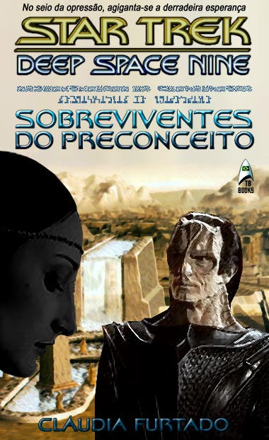

|

|
 |
|
Star Trek:
Deep Space Nine - Sobreviventes do Preconceito por Cludia Furtado
Romance baseado no
universo de Jornada nas Estrelas
Publicado pelo Trek Brasilis em setembro de 2002
|
|
A AUTORA Cludia Furtado
(c.furtado@superig.com.br) carioca, amante da Stima Arte e tem como hobby sries televisivas antigas que abrangem o perodo que vai dos anos 30 aos 90, sendo a fico cientfica o seu gnero favorito.
|
AGRADECIMENTOS
Ao grande amigo Rogrio Amaral de Vasconcellos, por me fazer acreditar que um sonho acalentado h muito pudesse se tornar realidade, e por seu inestimvel, irrestrito apoio como leitor e conselheiro, sem o qual esta obra sequer teria sado do mundo das idias.
A Mariana Pedroso, por gentilmente lembrar-se de meu nome, viabilizando um antigo desejo de ver este trabalho disponibilizado em um conceituado site de Jornadas nas Estrelas.
Aos meus pais, por incentivarem e participarem deste sonho.
Aos bons amigos virtuais que fiz nestes cinco anos de viagens no maravilhoso mundo da internet.
E finalmente saga de Jornada nas Estrelas, por ter sido tambm uma grande companheira de minha adolescncia.
APRESENTAO
interessante o processo pelo qual uma idia concebida inicialmente, e de maneira acanhada at, ganha vulto e transforma-se em algo que vai muito alm das expectativas, seguindo caminhos completamente diferentes daqueles que o autor imaginou como resultado final.
Essa premissa se encaixa com preciso na razo de ser de Sobreviventes do
Preconceito.
H pouco mais de dois anos, tendo descoberto os RPG's virtuais, resolvi fazer minha primeira incurso nesta seara, pois, alm da curiosidade sobre o seu mecanismo, percebi que era uma excelente oportunidade de saciar minha constante necessidade de colocar no papel (nos dias de hoje, leia-se tela) tudo aquilo que me vinha mente. Por ser f incondicional de seriados de fico cientfica, pensei comigo: por que no juntar o til ao agradvel?
Comecei timidamente a esboar os primeiros traos fsicos e psicolgicos da personagem, bem como o seu histrico, mas, na medida em que o mesmo tomava forma, senti a necessidade de buscar informaes extras para torn-lo crvel e quase real. A personagem em questo tornou-se to complexa, devido s pesquisas intensas e a qualidade de informaes adquiridas, que seria um desperdcio no aproveitar todo o material coletado. Foi ento que decidi partir para algo mais arrojado. Resolvi criar uma fan-fiction com ares de novela (histria com mais de 17 mil palavras e menos de 40 mil), lanando mo do cenrio de meu spin-off predileto de
Jornada -- Deep Space Nine.
Sobreviventes do Preconceito uma tentativa bastante ousada de minha parte em criar uma trilogia que pretende contar o dia-a-dia da Ocupao Cardassiana no planeta Bajor e as repercusses que ela gerou em todo o quadrante Alfa, trazendo como conseqncia a derrocada final do Imprio Cardassiano -- tudo isso visto pela tica de duas incomuns Bajorianas.
Espero que a leitura deste trabalho seja to agradvel ao leitor quanto foi para mim desenvolv-lo, e como esta narrativa a minha primeira experincia no gnero fan-fiction, o feedback seria sem dvida um excelente instrumento para a avaliao dessa tentativa pioneira.
C. Furtado
22 de agosto de 2002
Sobreviventes do Preconceito
|
01 | 02
| 03 |
04 | 05
| 06 |
07 | 08
| 09 |
| 10
| 11 |
12 | 13
| 14 |
15 | 16
| 17 |
18 |
| 19
| 20 |
21 | 22
| 23 |
24 | 25
| 26 |